macOS के लिए Metric
macOS के लिए बिल्ट-इन मेट्रोनोम वाला, विंडो में चलने वाला टाइमिंग और फ़्रीक्वेंसी टूलकिट। यह टेम्पो से डिले टाइम तय करता है, FM रेशियो और साइडबैंड निकालता है, LFO को बीट से सिंक करता है और सैंपल को ट्रांसपोज़ करता है, और यह सब आकार बदलने योग्य विंडो में होता है जिसे आप अपने DAW के बगल में खुला रख सकते हैं। Siri, शॉर्टकट और नोटिफ़िकेशन सेंटर विजेट के साथ काम करता है।
- टैप टेम्पो और विज़ुअल बीट वाला मेट्रोनोम
- BPM → ms / Hz कन्वर्टर (स्ट्रेट, डॉटेड, ट्रिपलेट)
- स्वर ↔ फ़्रीक्वेंसी टेबल (108 स्वर, A4 = 440 Hz)
- ट्रांसपोज़ और स्पीड, FM कैलकुलेटर, LFO रेट, 32 हार्मोनिक्स
- मेनू बार में टैप टेम्पो, ms या Hz में डिले टाइम, साथ में मेट्रोनोम और स्वर
- Siri, शॉर्टकट और नोटिफ़िकेशन सेंटर BPM विजेट
स्क्रीनशॉट
इसमें लाइट और डार्क स्क्रीनशॉट हैं, जो वेबसाइट की थीम के अनुसार बदलते हैं।

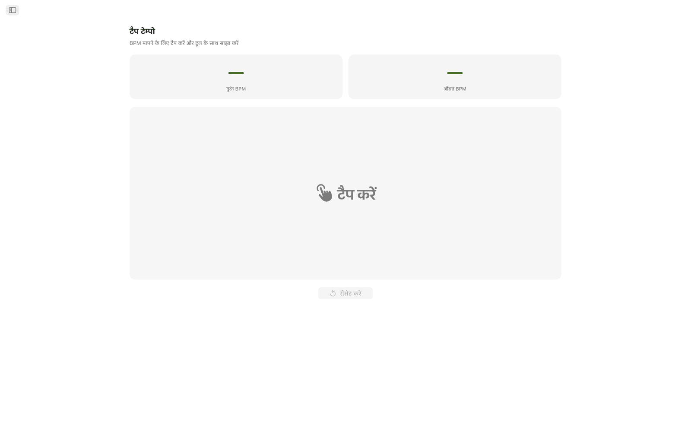
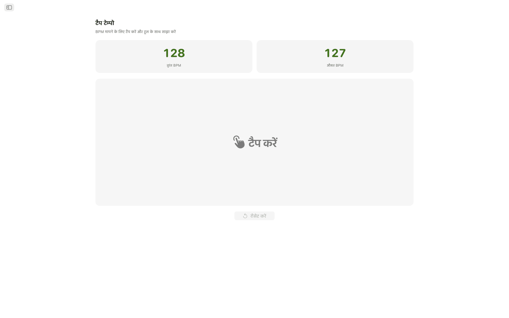
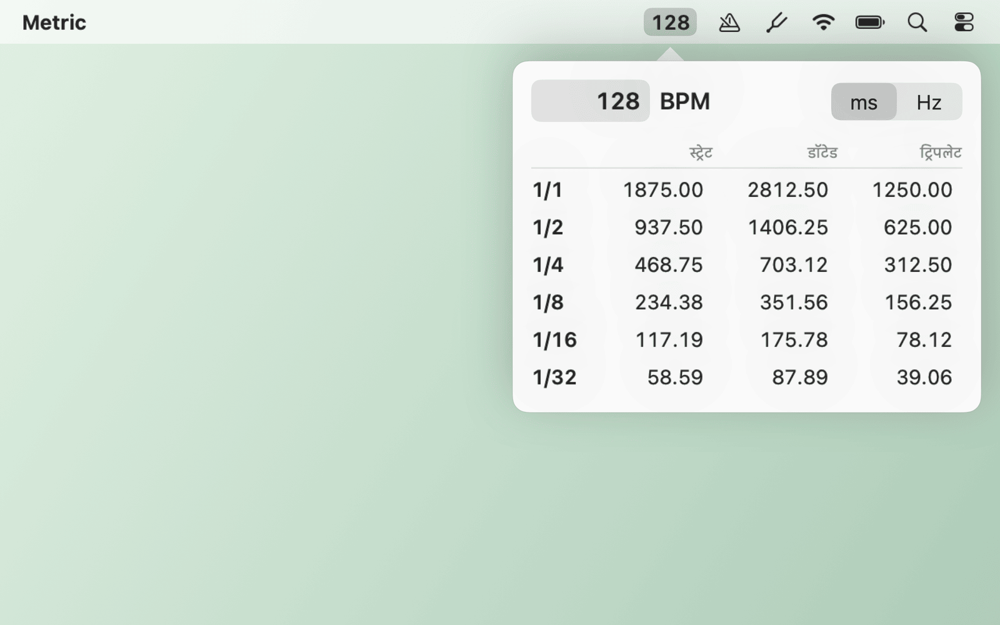
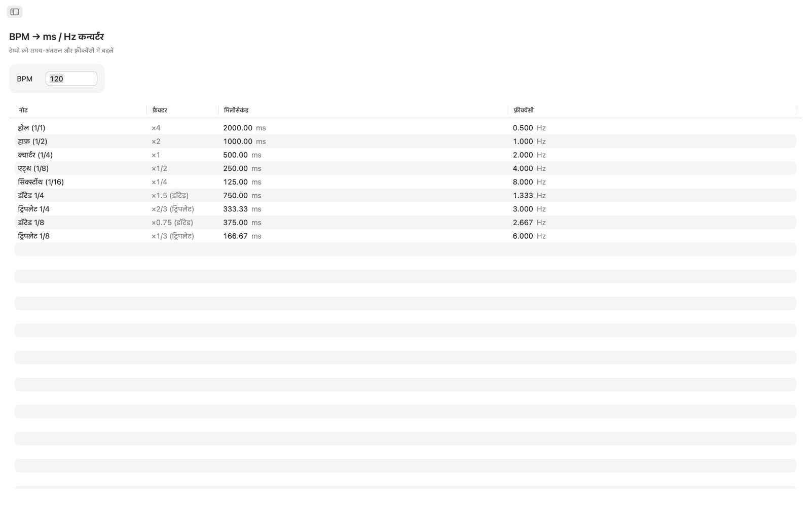
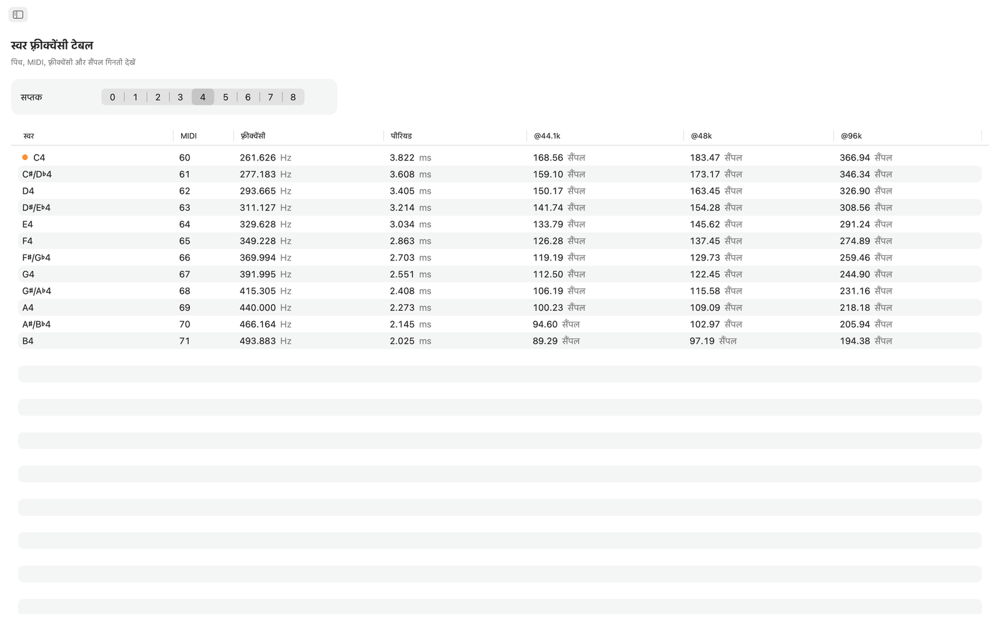
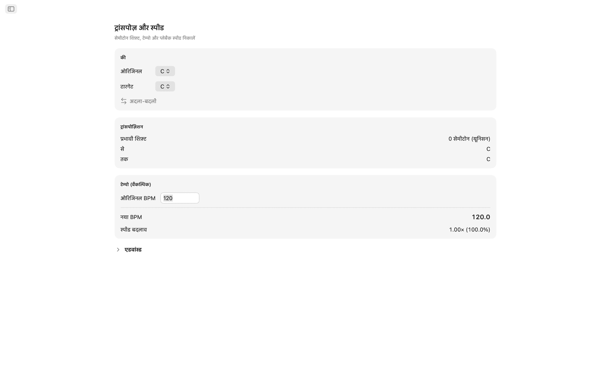
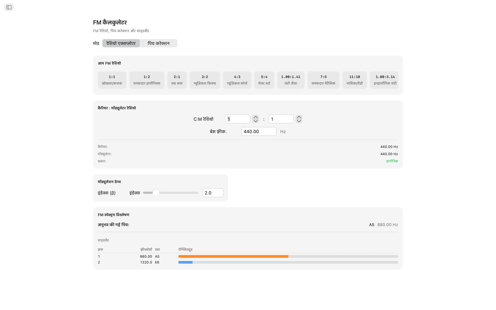
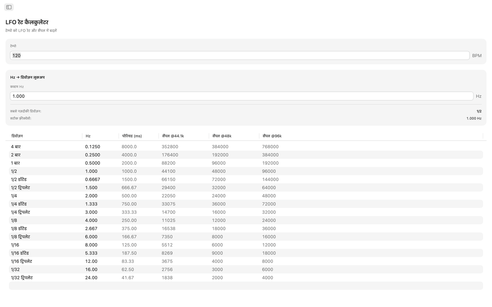
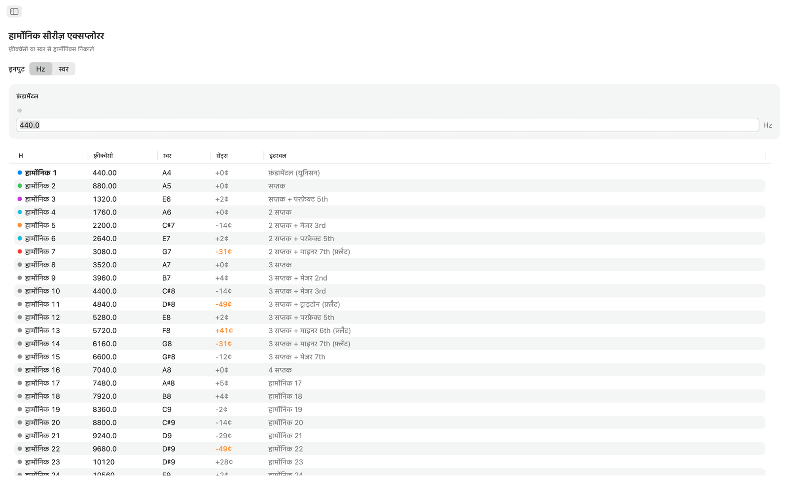
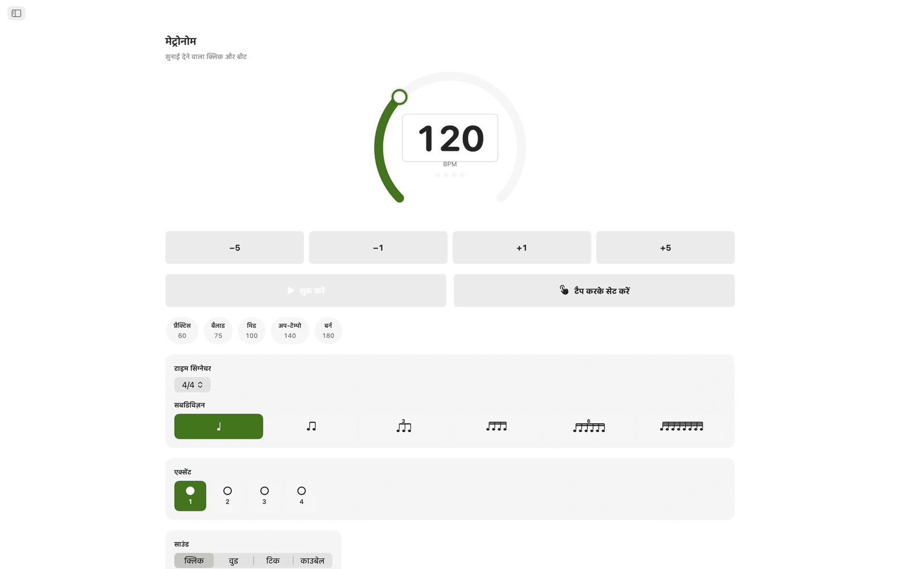
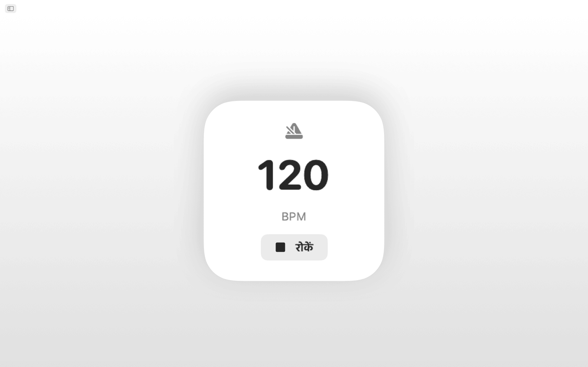
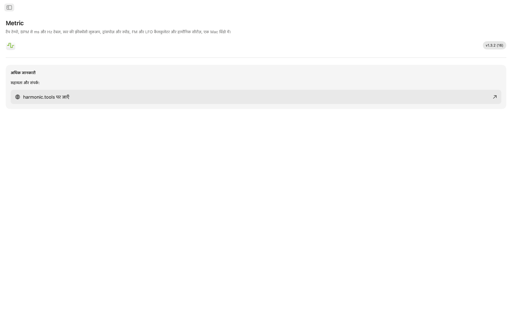
सुविधाएँ
- मेट्रोनोम में टेम्पो डायल, टैप करके टेम्पो सेट करना, टाइम सिग्नेचर, सबडिविज़न और विज़ुअल बीट इंडिकेटर है।
- टेम्पो नापने के लिए बड़े टैप एरिया पर क्लिक करें। Metric आपके आख़िरी टैप का BPM और अधिकतम आठ टैप का रोलिंग औसत दिखाता है, और दोनों में से कोई भी रीडिंग एक क्लिक से सीधे BPM कन्वर्टर, ट्रांसपोज़ या LFO रेट टूल में जा सकती है।
- BPM → ms / Hz कन्वर्टर टेम्पो लेकर होल, हाफ़, क्वार्टर, 8th और 16th नोट के स्ट्रेट, डॉटेड और ट्रिपलेट मान देता है। हर पंक्ति में मिलीसेकंड और Hz में फ़्रीक्वेंसी दिखती है, इसलिए डिले, रीवर्ब प्री-डिले या साइडचेन की टाइमिंग बिना कैलकुलेटर के सेट हो जाती है।
- स्वर फ़्रीक्वेंसी टेबल में C0 से B8 तक के सभी 108 क्रोमैटिक स्वर हैं। हर स्वर के साथ उसका MIDI नंबर, Hz में फ़्रीक्वेंसी, मिलीसेकंड में पीरियड और 44.1, 48 और 96 kHz पर सैंपल की गिनती दिखती है। मिडिल C पर निशान है। सभी मान A4 = 440 Hz पर आधारित हैं।
- ट्रांसपोज़ करने के लिए मूल की और लक्ष्य की चुनें, और सेमीटोन शिफ़्ट, इंटरवल का नाम और DAW का सटीक ट्रांसपोज़ मान देखें। मूल BPM जोड़ दें, तो Metric नया टेम्पो और प्लेबैक स्पीड का अनुपात निकाल देता है। सेंट्स स्लाइडर (±100) और दो सप्तक (±24 सेमीटोन) तक फैले स्पीड स्लाइडर से बारीक सेटिंग हो जाती है।
- FM कैलकुलेटर में दो मोड हैं। रेशियो एक्सप्लोरर में बेस फ़्रीक्वेंसी के साथ कैरियर और मॉड्यूलेटर रेशियो सेट होते हैं, और दस FM प्रीसेट मिलते हैं, खोखले सप्तक (1:1) से लेकर इनहार्मोनिक घंटियों (1:π) तक। पिच करेक्शन उलटा काम करता है: लक्ष्य स्वर चुनें और कैरियर और मॉड्यूलेटर की सटीक फ़्रीक्वेंसी पाएँ। दोनों मोड में साइडबैंड टेबल दिखती है, जिसमें दस तक पार्शियल, उनकी फ़्रीक्वेंसी, सबसे पास के स्वर और रंग-कोडित एम्प्लिट्यूड होते हैं, जो मॉड्यूलेशन इंडेक्स स्लाइडर से चलते हैं।
- LFO रेट कैलकुलेटर किसी भी BPM को चार बार से लेकर 1/32 ट्रिपलेट तक 17 म्यूज़िकल डिविज़न में LFO रेट में बदलता है। हर पंक्ति में Hz, मिलीसेकंड में पीरियड और 44.1, 48 और 96 kHz पर प्रति साइकल सैंपल दिखते हैं। रिवर्स लुकअप में कोई भी Hz मान डालकर सबसे नज़दीकी म्यूज़िकल डिविज़न खोजा जा सकता है, और त्रुटि भी दिखती है।
- हार्मोनिक सीरीज़ एक्सप्लोरर किसी फ़्रीक्वेंसी या किसी भी स्वर से शुरू करके पहले 32 हार्मोनिक्स को फ़्रीक्वेंसी, सबसे पास के स्वर का नाम, सेंट्स विचलन और इंटरवल लेबल के साथ दिखाता है। निचले क्रम के हार्मोनिक्स रंग-कोडित हैं, और 30 सेंट्स से ज़्यादा के विचलन हाइलाइट होते हैं, जिससे इनहार्मोनिक सामग्री आसानी से अलग दिखती है।
साझा टेम्पो और ट्यूनिंग
एक बार टेम्पो टैप करें और BPM कन्वर्टर, ट्रांसपोज़ और LFO रेट टूल सब एक ही लाइव BPM का उपयोग करते हैं। स्वर फ़्रीक्वेंसी, FM कैलकुलेटर और हार्मोनिक्स सब A4 = 440 Hz पर चलते हैं।
Siri, शॉर्टकट और विजेट
Siri से कहें कि वह मेट्रोनोम शुरू या बंद करे, BPM सेट करे, टेम्पो टैप करे, BPM को ms में बदले, किसी स्वर की फ़्रीक्वेंसी बताए या टेम्पो ट्रांसपोज़ करे। हर टूल एक शॉर्टकट क्रिया भी है, और BPM विजेट आपका टेम्पो नोटिफ़िकेशन सेंटर में रखता है।
मेनू बार टूल
ऐप खोले बिना मेनू बार से टेम्पो टैप करें। डिले टाइम ms या Hz में देखने के लिए राइट-क्लिक करें, और कोई भी टेम्पो टाइप करें। मेट्रोनोम और स्वर पिच के आइटम वैकल्पिक हैं, और सिर्फ़ मेनू बार मोड तथा लॉगिन पर खुलने की सेटिंग भी है।
डेस्कटॉप पर
- पूरी तरह ऑफ़लाइन चलता है। न अकाउंट, न विज्ञापन, न ट्रैकिंग
- साइडबार नेविगेशन वाला नेटिव macOS ऐप
- डार्क मोड के अनुसार बदलने वाला इंटरफ़ेस, जो सिस्टम अपीयरेंस का पालन करता है
- 44.1, 48 और 96 kHz पर सैंपल की गिनती
- आकार बदलने योग्य विंडो। इसे अपने DAW के बगल में खुला रखें
एक्सेसिबिलिटी
VoiceOver और वॉइस कंट्रोल के साथ काम करता है, और कीबोर्ड से भी चलाया जा सकता है, तीर वाली कुंजियों और Space के साथ।
Metric को 7 दिन निःशुल्क आज़माया जा सकता है। ट्रायल के बाद पूरी एक्सेस एक बार की खरीदारी है, कोई सब्सक्रिप्शन नहीं।